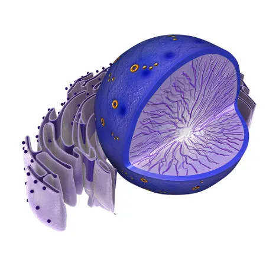

O núcleo é a organela central das células eucarióticas, onde está armazenada a maior parte do material genético (DNA). Envolto por uma membrana dupla chamada envoltório nuclear, ele separa o conteúdo nuclear do citoplasma.

Suas funções principais incluem a replicação do DNA e a síntese de RNA, essenciais para a transmissão da informação genética e a produção de proteínas. Além disso, o núcleo regula atividades celulares e coordena o ciclo celular, sendo fundamental para a vida celular.